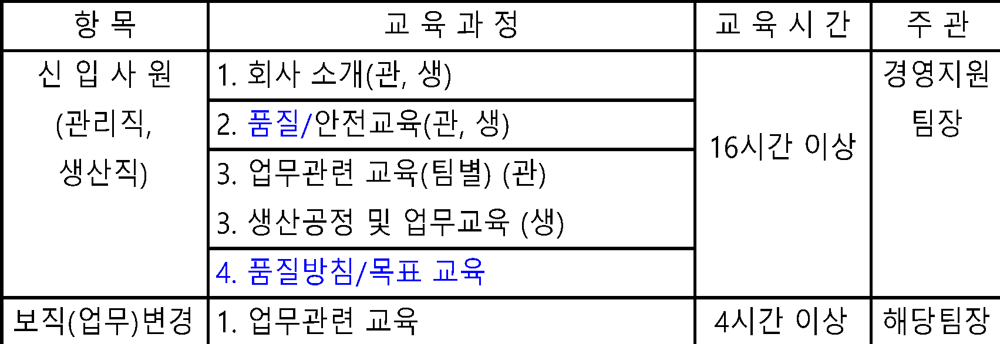
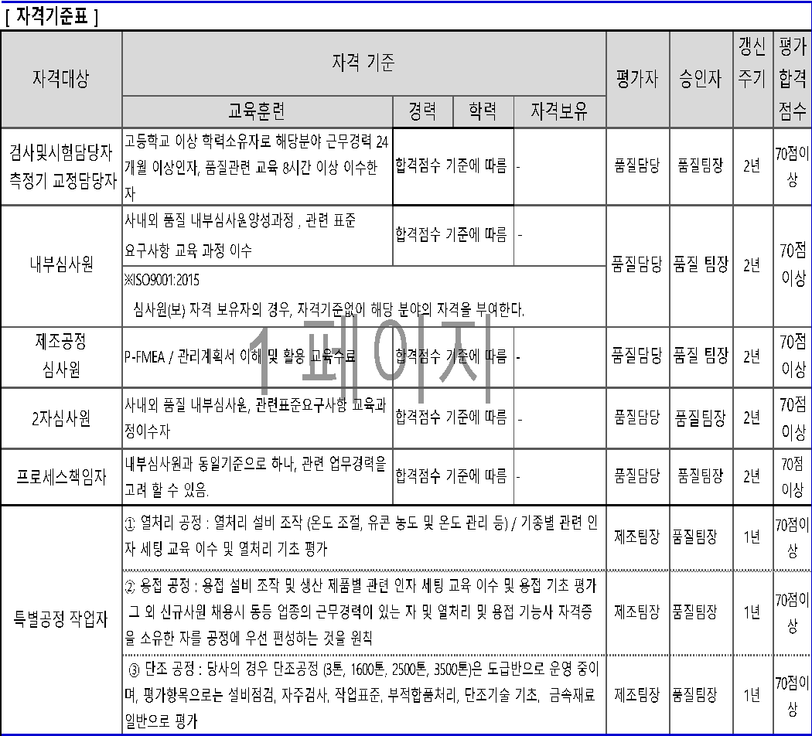
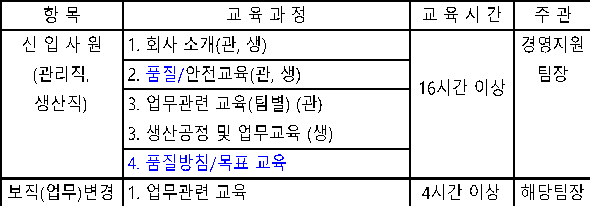
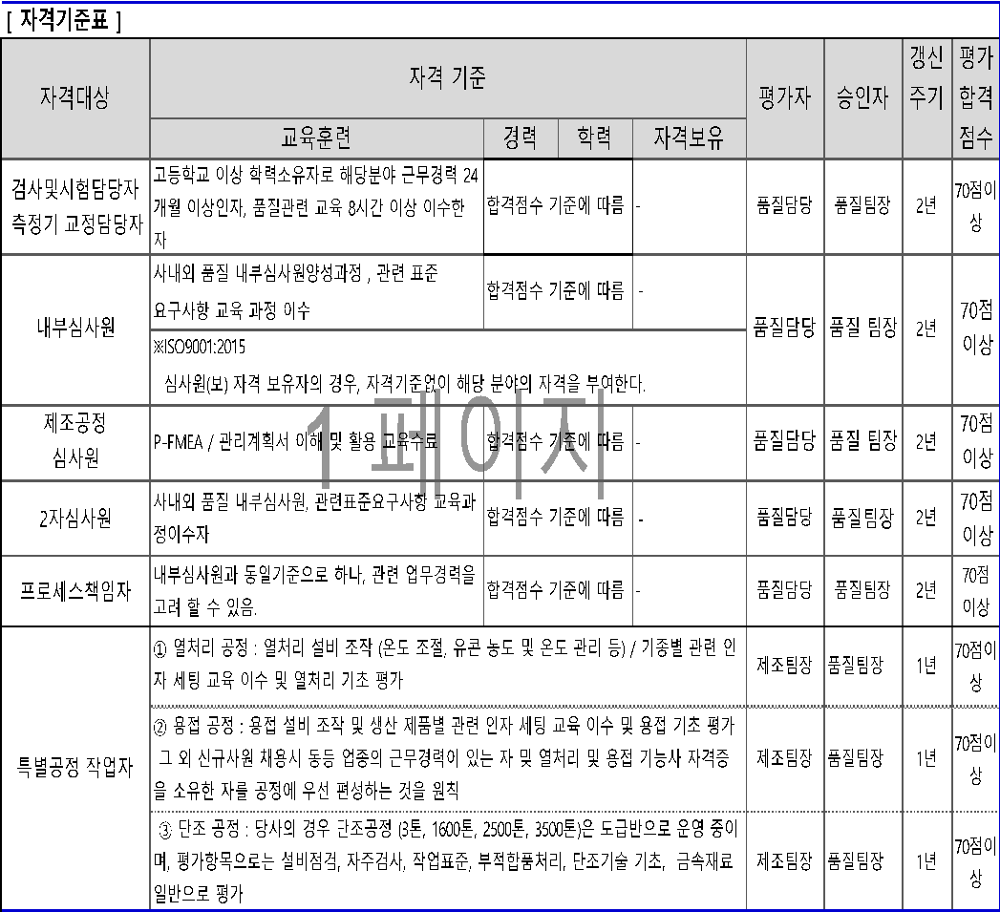

| 지원(SP) 프로세스 | 문서번호 | |||||||||||||||||||||||||||||||||||||||||||||||||||||||
| 인적자원관리 절차서 | MD-0703 | |||||||||||||||||||||||||||||||||||||||||||||||||||||||
| 상위 프로세스 | 교육훈련 프로세스 | |||||||||||||||||||||||||||||||||||||||||||||||||||||||
| 프로세스의 적용 범위 | 품질에 영향을 미치는 활동 및 특별히 부여된 업무를 수행하는 인원에 대한 교육훈련, 종업원 동기부여 및 | |||||||||||||||||||||||||||||||||||||||||||||||||||||||
| 기반구조확보, 업무환경 결정하고 관리하는 제반업무에 대하여 적용한다. | ||||||||||||||||||||||||||||||||||||||||||||||||||||||||
| 프로세스의 목적 | 품질에 영향을 미치는 인원 확보 및 그들이 책임지고 있는 업무를 수행할 수 있도록 교육훈련을 실시하기 | |||||||||||||||||||||||||||||||||||||||||||||||||||||||
| 위함이고, 제품실현을 위한 필요한 기반구조 및 업무환경을 확보 함으로써 a), b)를 확보하기 위함이다. | ||||||||||||||||||||||||||||||||||||||||||||||||||||||||
| a) 품질경영시스템의 실행 및 유지, 그리고 효과성에 대한 지속적인 개선 | ||||||||||||||||||||||||||||||||||||||||||||||||||||||||
| b) 고객 요구사항을 충족함으로써 고객만족을 증진 | ||||||||||||||||||||||||||||||||||||||||||||||||||||||||
| 관리팀 | ||||||||||||||||||||||||||||||||||||||||||||||||||||||||
| 성과지표 | 산출방법 | 주관부서 | 측정방법 | 주기 | ||||||||||||||||||||||||||||||||||||||||||||||||||||
| 교육계획 달성률 | (실적/계획) x100 | 관리팀 | 보고서 | 1회/반기 | ||||||||||||||||||||||||||||||||||||||||||||||||||||
| A.관리팀장 및 각 팀장,각 담당자 | ||||||||||||||||||||||||||||||||||||||||||||||||||||||||
| B.강사 | ||||||||||||||||||||||||||||||||||||||||||||||||||||||||
| A.교육시설 및 장비, 교재, 종업원만족도C/S, 3정5행C/S, 인원요청서, 물품청구서, 기반구조 | ||||||||||||||||||||||||||||||||||||||||||||||||||||||||
| B.자원관리 System | ||||||||||||||||||||||||||||||||||||||||||||||||||||||||
| A 경영관리 프로세스, 생산관리 프로세스 | ||||||||||||||||||||||||||||||||||||||||||||||||||||||||
| B 경영검토 절차서 | ||||||||||||||||||||||||||||||||||||||||||||||||||||||||
| ※ 개정이력 | ||||||||||||||||||||||||||||||||||||||||||||||||||||||||
| NO. | 일자 | 제.개정 내용 | 작성 | 검토 | 승인 | |||||||||||||||||||||||||||||||||||||||||||||||||||
| 0 | 2025-05-28 | ISO 9001:2015 최초 작성 | 결재 完 | 결재 完 | 결재 完 | |||||||||||||||||||||||||||||||||||||||||||||||||||
| 1 | ||||||||||||||||||||||||||||||||||||||||||||||||||||||||
| 2 | ||||||||||||||||||||||||||||||||||||||||||||||||||||||||
| 3 | ||||||||||||||||||||||||||||||||||||||||||||||||||||||||
| 4 | ||||||||||||||||||||||||||||||||||||||||||||||||||||||||
| 인적자원관리 절차서 | 문서 번호 | MD-0703 | |||||||||||||||||||||||||||||||||||||||||||||||||
| 쪽 | 1 | ||||||||||||||||||||||||||||||||||||||||||||||||||
| 제정일자 | 2025-05-28 | 개정 번호 | 1 | 개정 일자 | 2025-05-28 | 시행일자 | 2025-05-28 | ||||||||||||||||||||||||||||||||||||||||||||
| 구분 | IN PUT | TOP | 주 관 팀 | 관 련 팀 | 외부 교육 기관 | OUT PUT | |||||||||||||||||||||||||||||||||||||||||||||
| 관리팀 | 전팀 | ||||||||||||||||||||||||||||||||||||||||||||||||||
| *교육일정 | |||||||||||||||||||||||||||||||||||||||||||||||||||
| 조직 및 업무 변경 | |||||||||||||||||||||||||||||||||||||||||||||||||||
| *연간 교육 계획서(사내) | |||||||||||||||||||||||||||||||||||||||||||||||||||
| - 교육교안 | |||||||||||||||||||||||||||||||||||||||||||||||||||
| *연간 교육 계획서(사외) | *사외교육 계획 | ||||||||||||||||||||||||||||||||||||||||||||||||||
| *교육 일정 | |||||||||||||||||||||||||||||||||||||||||||||||||||
| *교육 계획(사내) | |||||||||||||||||||||||||||||||||||||||||||||||||||
| *교육불참사유서 | *교육일지 | ||||||||||||||||||||||||||||||||||||||||||||||||||
| *교육수료증 | |||||||||||||||||||||||||||||||||||||||||||||||||||
| *교육이수 보고서 | |||||||||||||||||||||||||||||||||||||||||||||||||||
| *교육평가서 | |||||||||||||||||||||||||||||||||||||||||||||||||||
| *교육평가서 | |||||||||||||||||||||||||||||||||||||||||||||||||||
| *교육실적 보고서 | |||||||||||||||||||||||||||||||||||||||||||||||||||
| *현업 유효성 평가서 | |||||||||||||||||||||||||||||||||||||||||||||||||||
| *적격성평가 | *교육평가서 분석결과 | ||||||||||||||||||||||||||||||||||||||||||||||||||
| *교육실적보고서(승인) | |||||||||||||||||||||||||||||||||||||||||||||||||||
| *적격성 평가서 | |||||||||||||||||||||||||||||||||||||||||||||||||||
사외(사내)교육 실시
Y
N
교육 정보
필요교육 선정 및 제출
교육일정 통보
Y
N
교육불참 사유서 제출
현업 유효성 평가
교육평가서 분석
승인
연간 교육계획 수립
기록보관
연간 교육계획 수립(사내)
A
B
수료증, 이수보고서, 교육평가서 상신
기록보관
교육정보 입수 및 배포
외부기관 교육
신청
차기 교육기관 선정시 반영
월간 교육실적
보고
Y
N
| 인적자원관리 절차서 | 문서 번호 | MD-0703 | |||||||||||||||||||||||||||||||||||||||||||||||||
| 쪽 | 2 | ||||||||||||||||||||||||||||||||||||||||||||||||||
| 제정일자 | 2025-05-28 | 개정 번호 | 1 | 개정 일자 | 2025-05-28 | 시행일자 | 2025-05-28 | ||||||||||||||||||||||||||||||||||||||||||||
| 1. 적용범위 | |||||||||||||||||||||||||||||||||||||||||||||||||||
| 본 절차서는 주식회사엠에스티 (이하 ‘회사’라 한다.)의 품질에 미치는 모든 직원의 교육훈련 계획 및 실시와 | |||||||||||||||||||||||||||||||||||||||||||||||||||
| 자격인정에 관하여 적용한다. | |||||||||||||||||||||||||||||||||||||||||||||||||||
| 2. 목적 | |||||||||||||||||||||||||||||||||||||||||||||||||||
| 본 절차서는 회사의 교육훈련을 통한 직무능력 향상 및 자격인정으로 책임감을 부여하고 품질 | |||||||||||||||||||||||||||||||||||||||||||||||||||
| 시스템을 유지관리 하는데 그 목적이 있다. | |||||||||||||||||||||||||||||||||||||||||||||||||||
| 3. 용어의 정의 | |||||||||||||||||||||||||||||||||||||||||||||||||||
| 3.1 교육 훈련 | |||||||||||||||||||||||||||||||||||||||||||||||||||
| 업무 수행에 관련된 개념 및 인식, 이론, 지식 등을 전파하는 것과 태도, 실천방법, 요령 등을 전수 | |||||||||||||||||||||||||||||||||||||||||||||||||||
| 하는 것. | |||||||||||||||||||||||||||||||||||||||||||||||||||
| 3.2 자격 인정 | |||||||||||||||||||||||||||||||||||||||||||||||||||
| 특별히 정해진 업무를 수행하는 직원이 정상적인 업무를 충분히 수행할 수 있다는 것을 보장 | |||||||||||||||||||||||||||||||||||||||||||||||||||
| 3.3 내부심사원 | |||||||||||||||||||||||||||||||||||||||||||||||||||
| 내부품질심사 및 제조공정심사를 수행하는 인원 | |||||||||||||||||||||||||||||||||||||||||||||||||||
| 3.4 검사원 | |||||||||||||||||||||||||||||||||||||||||||||||||||
| 수입검사, 공정검사, 출하검사 및 시험업무를 수행하는 인원 | |||||||||||||||||||||||||||||||||||||||||||||||||||
| 3.5 검교정 요원 | 업체에서 기준 수립 기준구에 대해 | ||||||||||||||||||||||||||||||||||||||||||||||||||
| 검교정 업무를 수행하는 인원 | 고객사 요구하는 경우는 기준 없음 | ||||||||||||||||||||||||||||||||||||||||||||||||||
| 3.6 특별공정 (중요공정) 작업자 | 문제 발생 시, 양산 전 검사구 확인 > 고객에서 요구사항 반영 | ||||||||||||||||||||||||||||||||||||||||||||||||||
| 핵심기술을 요하는 공정으로 당사의 경우는 CNC 가공 공정, Lapping/Polishing 공정에서 업무를 수행하는 인원을 말한다. | |||||||||||||||||||||||||||||||||||||||||||||||||||
| 4. 책임과 권한 | |||||||||||||||||||||||||||||||||||||||||||||||||||
| 4.1 대표이사 | |||||||||||||||||||||||||||||||||||||||||||||||||||
| 4.1.1 연간 교육계획서 검토 / 승인 | |||||||||||||||||||||||||||||||||||||||||||||||||||
| 4.1.2 교육훈련 품의서 승인 | |||||||||||||||||||||||||||||||||||||||||||||||||||
| 4.1.3 사, 내외 교육결과 보고서 승인 | |||||||||||||||||||||||||||||||||||||||||||||||||||
| 4.2 관리팀팀장 | |||||||||||||||||||||||||||||||||||||||||||||||||||
| 4.2.1 연간교육계획서 작성 및 검토 | |||||||||||||||||||||||||||||||||||||||||||||||||||
| 4.2.2 임직원의 개인별 교육(학습)결과 유지관리 | |||||||||||||||||||||||||||||||||||||||||||||||||||
| 4.3 해당팀장(또는 팀원) | |||||||||||||||||||||||||||||||||||||||||||||||||||
| 4.3.1 적격성 요구기준서 작성 및 평가 | |||||||||||||||||||||||||||||||||||||||||||||||||||
| 4.3.2 교육훈련 품의서 작성 검토 | |||||||||||||||||||||||||||||||||||||||||||||||||||
| 4.3.3 사, 내외 교육결과 보고서 작성 및 검토 | |||||||||||||||||||||||||||||||||||||||||||||||||||
| 4.3.4 팀원의 자격인정 요청서 작성 | |||||||||||||||||||||||||||||||||||||||||||||||||||
| 4.3.5 자격인정의 검토 및 승인 (대표이사 또는 품질팀장이 승인한다) | |||||||||||||||||||||||||||||||||||||||||||||||||||
| 5. 업무 절차 | |||||||||||||||||||||||||||||||||||||||||||||||||||
| 5.1 교육훈련 적격성 파악 | |||||||||||||||||||||||||||||||||||||||||||||||||||
| 5.1.1 해당팀장은 팀원의 교육훈련의 필요성을 파악하여 그 결과를 관리팀장에게 통보한다. | |||||||||||||||||||||||||||||||||||||||||||||||||||
| 5.1.2 관리팀장은 해당팀장과 협의하여 전직원의 교육의 필요성을 파악하고 그 결과를 종합 | |||||||||||||||||||||||||||||||||||||||||||||||||||
| 하여 연간 교육계획서를 작성 대표이사의 승인을 득한후 해당팀에 통보한다. | |||||||||||||||||||||||||||||||||||||||||||||||||||
| 5.2 교육훈련 실시 통보 | |||||||||||||||||||||||||||||||||||||||||||||||||||
| 교육대상자는 연간 교육계획에 따라 교육훈련 실시 7일 전까지 교육신청서를 작성하여 | |||||||||||||||||||||||||||||||||||||||||||||||||||
| 대표이사의 승인을 득한 후 수신참조를 통해 관리팀으로 통보한다. | |||||||||||||||||||||||||||||||||||||||||||||||||||
| 5.3 교육훈련 실시 | |||||||||||||||||||||||||||||||||||||||||||||||||||
| 5.3.1 사내교육 | |||||||||||||||||||||||||||||||||||||||||||||||||||
| 1) 해당팀장은 교육일정에 따라 팀원 교육을 실시한다. | |||||||||||||||||||||||||||||||||||||||||||||||||||
| 2) 교육을 이수한 팀원은 교육보고서를 작성하여 대표이사의 승인을 득한 후 | |||||||||||||||||||||||||||||||||||||||||||||||||||
| 관리팀장에게 제출한다. | |||||||||||||||||||||||||||||||||||||||||||||||||||
| 5.3.2 사외교육 | |||||||||||||||||||||||||||||||||||||||||||||||||||
| 1) 사외교육 대상자는 사외교육 일정에 따라 교육에 참석하여야 한다. | |||||||||||||||||||||||||||||||||||||||||||||||||||
| 2) 교육 수료자는 수료후 3일 이내에 수료증(교육기관에서 수료증을 줄 경우)과 교육 | |||||||||||||||||||||||||||||||||||||||||||||||||||
| 보고서를 작성하여 대표이사의 승인을 득한 후 관리팀장에게 제출한다. | |||||||||||||||||||||||||||||||||||||||||||||||||||
| 3) 해당팀장은 교육 수료자에게 필요시 타 임직원에게 전달교육을 실시토록 한다. | |||||||||||||||||||||||||||||||||||||||||||||||||||
| 5.4 자격인정 | |||||||||||||||||||||||||||||||||||||||||||||||||||
| 다음과 같은 업무를 수행하는 인원은 사내 자격인정 기준에 준하여 적합한 자를 선택, 교육하여 | |||||||||||||||||||||||||||||||||||||||||||||||||||
| 자격인정 (요청서 / 승인서)를 작성하여 품질팀장에게 송부하고, 자격 부여 후 | |||||||||||||||||||||||||||||||||||||||||||||||||||
| 그 직무를 수행하도록 한다. | |||||||||||||||||||||||||||||||||||||||||||||||||||
| 5.4.1 내부 심사원 | |||||||||||||||||||||||||||||||||||||||||||||||||||
| 내부품질심사 및 제조공정심사를 수행하기 위해 자격이 부여되고 인정된 자로, 다음과 같은 | |||||||||||||||||||||||||||||||||||||||||||||||||||
| 일을 수행한다. | |||||||||||||||||||||||||||||||||||||||||||||||||||
| 1) ISO 9001 품질 경영시스템 유지 | |||||||||||||||||||||||||||||||||||||||||||||||||||
| 2) 심사의 준비, 수행, 보고 및 시정조치 확인 | |||||||||||||||||||||||||||||||||||||||||||||||||||
| 3) 관련표준의 이행 확인 및 유지관리 | |||||||||||||||||||||||||||||||||||||||||||||||||||
| 5.4.2 검사원 | |||||||||||||||||||||||||||||||||||||||||||||||||||
| 규정된 요건에 적합한지를 확인하기 위해 검사를 수행하는 자로 다음과 같은 일을 수행한다. | |||||||||||||||||||||||||||||||||||||||||||||||||||
| 1) 제품 및 부품의 기능 파악, 이해 및 숙지 | |||||||||||||||||||||||||||||||||||||||||||||||||||
| 2) 관련 표준 (관련 절차서, 검사기준서, 도면 등)의 이해 | |||||||||||||||||||||||||||||||||||||||||||||||||||
| 3) 품질관련 Data 정리 및 기록유지 | |||||||||||||||||||||||||||||||||||||||||||||||||||
| 4) 통계적 기법 활용 (SPC 등) | |||||||||||||||||||||||||||||||||||||||||||||||||||
| 5.4.3 검교정요원 | |||||||||||||||||||||||||||||||||||||||||||||||||||
| 계량·계측을 목적으로 하는 측정기기 및 게이지 교정검사를 담당하는 자로 다음과 같은 일을 수행 | |||||||||||||||||||||||||||||||||||||||||||||||||||
| 한다. | |||||||||||||||||||||||||||||||||||||||||||||||||||
| 1) 측정기기 관리 및 전문 측정교육 이수 | |||||||||||||||||||||||||||||||||||||||||||||||||||
| 2) 계측에 필요한 Data 정리 및 기록 유지 | |||||||||||||||||||||||||||||||||||||||||||||||||||
| 3) 통계적 기법의 활용 (MSA 등) | |||||||||||||||||||||||||||||||||||||||||||||||||||
| 5.4.4 특별공정 작업자 | |||||||||||||||||||||||||||||||||||||||||||||||||||
| 특정한 교육과 지정된 평가를 통하여 자격이 부여된 자로 회사에서 지정한 특별공정에서 관리 | |||||||||||||||||||||||||||||||||||||||||||||||||||
| 계획서 및 작업표준에 의거하여 그 기준에 따라 작업을 진행하는데 결격사유가 없는 작업요원을 | |||||||||||||||||||||||||||||||||||||||||||||||||||
| 말한다. | |||||||||||||||||||||||||||||||||||||||||||||||||||
| 1) 특별공정에 필요한 교육 이수 | |||||||||||||||||||||||||||||||||||||||||||||||||||
| 2) 특별공정에서 지정한 평가 통과 | |||||||||||||||||||||||||||||||||||||||||||||||||||
| 3) 관련 표준(관련 절차서, 지침서, 작업표준서, 자주검사체크시트, 사양표, 도면 등)의 이해 | |||||||||||||||||||||||||||||||||||||||||||||||||||
| 5.5 신입 및 보직(업무) 변경자 교육훈련 | |||||||||||||||||||||||||||||||||||||||||||||||||||
| 5.6 자격 요건 | |||||||||||||||||||||||||||||||||||||||||||||||||||
| 5.6.1 내부심사원 | |||||||||||||||||||||||||||||||||||||||||||||||||||
| 자격 인정 대상자는 다음 요건에 만족해야 하며, 100점 기준으로 70점 이상을 얻어야 한다. | |||||||||||||||||||||||||||||||||||||||||||||||||||
| 1) 학력 : 30점 | |||||||||||||||||||||||||||||||||||||||||||||||||||
| ① 초대졸 또는 동등 이상의 학력 인정자 (30점) | |||||||||||||||||||||||||||||||||||||||||||||||||||
| ② 고졸 또는 동등 이상의 학력 인정자 (20점) | |||||||||||||||||||||||||||||||||||||||||||||||||||
| ③ ①, ②항에 해당하는 자로 이공계열 전공자인 경우 10점 가산 | |||||||||||||||||||||||||||||||||||||||||||||||||||
| 2) 경력 : 40점 (반도체 장비 및 동종 업종에 근무경력 인정함) | |||||||||||||||||||||||||||||||||||||||||||||||||||
| ① 만 3년 이상 시스템업무를 수행하였거나 만 5년 이상 회사 근무자 (40점) | |||||||||||||||||||||||||||||||||||||||||||||||||||
| ② 만 2년 이상 시스템업무를 수행하였거나 만 3년 이상 회사 근무자 (30점) | |||||||||||||||||||||||||||||||||||||||||||||||||||
| ③ 만 1년 이상 시스템업무를 수행하였거나 만 2년 이상 회사 근무자 (20점) | |||||||||||||||||||||||||||||||||||||||||||||||||||
| ④ 만 2년 이하 회사 근무자 (10점) | |||||||||||||||||||||||||||||||||||||||||||||||||||
| 3) 교육 훈련 : 30점 | |||||||||||||||||||||||||||||||||||||||||||||||||||
| ① 내부(품질)심사관련 교육 8시간 이상 수료 (30점) | |||||||||||||||||||||||||||||||||||||||||||||||||||
| ② ISO9001 요구사항 교육 8시간 이상 수료 (20점) | |||||||||||||||||||||||||||||||||||||||||||||||||||
| ③ ISO9001 요구사항 교육 4시간 이상 수료 (10점) | |||||||||||||||||||||||||||||||||||||||||||||||||||
| ④ 품질 관련 자격증 보유자는 10점 가산 | |||||||||||||||||||||||||||||||||||||||||||||||||||
| 5.6.2 검사원 (70점 이상 자격인정) | |||||||||||||||||||||||||||||||||||||||||||||||||||
| 1) 학력 : 15점 | |||||||||||||||||||||||||||||||||||||||||||||||||||
| ① 전문대졸 또는 동등 이상의 학력 인정자 (15점) | |||||||||||||||||||||||||||||||||||||||||||||||||||
| ② 고졸 또는 동등 이상의 학력 인정자 (12점) | |||||||||||||||||||||||||||||||||||||||||||||||||||
| ③ 중졸 (10점) | |||||||||||||||||||||||||||||||||||||||||||||||||||
| ④ 중졸 미만 (7점) | |||||||||||||||||||||||||||||||||||||||||||||||||||
| 2) 시험/검사 경력 : 15점 (반도체 장비 및 동종 업종에 근무경력 인정함) | |||||||||||||||||||||||||||||||||||||||||||||||||||
| ① 만 3년 이상 품질관리업무를 수행 (15점) | |||||||||||||||||||||||||||||||||||||||||||||||||||
| ② 만 2년 이상 품질관리업무를 수행 (12점) | |||||||||||||||||||||||||||||||||||||||||||||||||||
| ③ 만 1년 이상 품질관리업무를 수행 (10점) | |||||||||||||||||||||||||||||||||||||||||||||||||||
| ④ 만 1년 미만 품질관리업무를 수행 (7점) | |||||||||||||||||||||||||||||||||||||||||||||||||||
| 3) 근속연수 : 10점 | |||||||||||||||||||||||||||||||||||||||||||||||||||
| ① 만 3년 이상 (10점) | |||||||||||||||||||||||||||||||||||||||||||||||||||
| ② 만 2년 이상 (8점) | |||||||||||||||||||||||||||||||||||||||||||||||||||
| ③ 만 1년 이상 (6점) | |||||||||||||||||||||||||||||||||||||||||||||||||||
| ④ 만 1년 미만 (4점) | |||||||||||||||||||||||||||||||||||||||||||||||||||
| 4) 업무능력 : 40점 | |||||||||||||||||||||||||||||||||||||||||||||||||||
| PC활용, 도면보는 법, 제품 및 부품의 기능 파악, 금속재료 일반, 가공기술 일반, 연마(Lapping/Polishing)기술 | |||||||||||||||||||||||||||||||||||||||||||||||||||
| 일반, 정밀측정 기술, 품질관리기법의 8가지 범주별로 평가하여 | |||||||||||||||||||||||||||||||||||||||||||||||||||
| 독자적으로 업무수행 가능 (5점), 지시한 내용을 수용함 (4점), 지시한 내용을 일부 수용함(3점), | |||||||||||||||||||||||||||||||||||||||||||||||||||
| 개념 파악 (1점), 전혀 모름(0점)으로 평가 함 | |||||||||||||||||||||||||||||||||||||||||||||||||||
| 5) 교육 이수 : 20점 | |||||||||||||||||||||||||||||||||||||||||||||||||||
| ① 30시간 이상 (20점) | |||||||||||||||||||||||||||||||||||||||||||||||||||
| ② 20시간 이상 (15점) | |||||||||||||||||||||||||||||||||||||||||||||||||||
| ③ 10시간 이상 (10점) | |||||||||||||||||||||||||||||||||||||||||||||||||||
| 5.6.3 검교정 요원 | |||||||||||||||||||||||||||||||||||||||||||||||||||
| 검교정 자격요건은 계량법 시행령 교정기관 지정기준에 따른다. | |||||||||||||||||||||||||||||||||||||||||||||||||||
| 1) 관리책임자 | |||||||||||||||||||||||||||||||||||||||||||||||||||
| 이공계분야 대졸 이상 졸업자 또는 국가기술자격 취득자 (계량기사, 정밀측정기사 등) | |||||||||||||||||||||||||||||||||||||||||||||||||||
| 또는 품질 및 계량측정분야 5년 이상 종사자. | |||||||||||||||||||||||||||||||||||||||||||||||||||
| 2) 기술 인력 | |||||||||||||||||||||||||||||||||||||||||||||||||||
| 공업고등학교 졸업 이상이며 검사/측정/교정관련 품질관련 근무 3년 이상인 자로 관련 사외교육 | |||||||||||||||||||||||||||||||||||||||||||||||||||
| 8시간 이상 수료한 자 | |||||||||||||||||||||||||||||||||||||||||||||||||||
| 5.6.4 특별공정 작업자 | |||||||||||||||||||||||||||||||||||||||||||||||||||
| 1) 특별공정 작업자는 다음의 요건을 충족해야 자격인정을 한다. | |||||||||||||||||||||||||||||||||||||||||||||||||||
| ① CNC 가공 공정 : CNC 설비 조작 (프로그램 확인, 공구·원점 세팅 및 가공조건 관리 등) / 기종별 관련 | |||||||||||||||||||||||||||||||||||||||||||||||||||
| 인자 세팅 교육 이수 및 CNC 가공 기초 평가에서 70점 이상을 받은 자 | |||||||||||||||||||||||||||||||||||||||||||||||||||
| ② Lapping/Polishing 공정 : Lapping/Polishing 설비 조작 및 생산 제품별 관련 인자 세팅 교육 이수 및 Lapping/Polishing 기초 | |||||||||||||||||||||||||||||||||||||||||||||||||||
| 평가에서 70점 이상을 받은 자. | |||||||||||||||||||||||||||||||||||||||||||||||||||
| 그 외 신규사원 채용시 동등 업종의 근무경력이 있는 자 및 컴퓨터응용가공 관련 기능사 자격증 | |||||||||||||||||||||||||||||||||||||||||||||||||||
| 을 소유한 자를 공정에 우선 편성하는 것을 원칙으로 한다. | |||||||||||||||||||||||||||||||||||||||||||||||||||
| ③ 세척 공정 : 세척 설비 조작 및 세척 조건(세척액 농도, 온도, 시간) 관리 교육 이수 후, | |||||||||||||||||||||||||||||||||||||||||||||||||||
| 평가항목으로는 설비점검, 자주검사, 작업표준, 부적합품처리, 세척기술 기초, | |||||||||||||||||||||||||||||||||||||||||||||||||||
| 금속재료 일반으로 평가하여 70점 이상을 받은 자. | |||||||||||||||||||||||||||||||||||||||||||||||||||
| 5.7 자격인정 심사 및 기간 | |||||||||||||||||||||||||||||||||||||||||||||||||||
| 5.7.1 품질팀장 및 관련 해당팀장은 자격인정평가표에 의해 심사 후 자격인정자의 이력을 관리하고 | |||||||||||||||||||||||||||||||||||||||||||||||||||
| 이들로 하여금 검사, 심사, 검교정, 특별공정 작업업무를 수행하게 한다. | |||||||||||||||||||||||||||||||||||||||||||||||||||
| 5.7.2 내부심사원은 대표이사가 승인함으로써 인정된다. | |||||||||||||||||||||||||||||||||||||||||||||||||||
| 5.7.3 기 자격 인정자의 퇴사 또는 업무전환시에 인정자 소속팀장은 해당업무 수행에 영향을 미치지 | |||||||||||||||||||||||||||||||||||||||||||||||||||
| 않는 기한내 그 대리인을 선정하여 기 자격자와 대체 되도록 한다. | |||||||||||||||||||||||||||||||||||||||||||||||||||
| 5.7.4 자격인정 기간은 통상 2년으로 하고 특별공정작업자만 1년으로 하며, | |||||||||||||||||||||||||||||||||||||||||||||||||||
| 기간이 만료시 재심사하되 특별한 사유가 없는 한 유임할 수 있다 | |||||||||||||||||||||||||||||||||||||||||||||||||||
| 5.7.5 단, 특별공정 작업자의 자격인정 기간은 보직이 변경되거나 개인 또는 회사의 사정에 의하여 30일 | |||||||||||||||||||||||||||||||||||||||||||||||||||
| 이상의 휴직을 했을 경우를 제외하고 정상적인 근무 기간에는 자격 인정을 하는 것으로 한다. | |||||||||||||||||||||||||||||||||||||||||||||||||||
| 장기 휴직 및 퇴직하는 경우는 그자격이 자동으로 소멸된다. | |||||||||||||||||||||||||||||||||||||||||||||||||||
| 5.7.6 품질팀 담당자는 송부된 자격인정평가표, 자격인정서, 다기능 수련도 평가서의 내용이 자격 요건에 | |||||||||||||||||||||||||||||||||||||||||||||||||||
| 만족하는지 여부를 검토한다. | |||||||||||||||||||||||||||||||||||||||||||||||||||
| 5.7.7 품질팀 담당자는 인정서에 대한 검토 및 승인이 완료되면 해당팀장에게 자격인정 여부를 통보한다. | |||||||||||||||||||||||||||||||||||||||||||||||||||
| 5.8 (조직의)지식관리 | |||||||||||||||||||||||||||||||||||||||||||||||||||
| 5.8.1 당사의 지식관리는 “집체전파교육” 을 운영하며, 관련된 사항은 세부기준에 | |||||||||||||||||||||||||||||||||||||||||||||||||||
| 의거하여 QMS에서 요구되는 지식관리를 시행한다. | |||||||||||||||||||||||||||||||||||||||||||||||||||
| 5.8.2 지식관리대상의 기준 | |||||||||||||||||||||||||||||||||||||||||||||||||||
| (1) 리스크 관리 및 리스크 관리대장, 리스크 효과성 평가 결과 등은 유사프로세스에서의 | |||||||||||||||||||||||||||||||||||||||||||||||||||
| 리스크 및 부적합의 예방을 위하여 학습 교훈으로 활용한다. | |||||||||||||||||||||||||||||||||||||||||||||||||||
| (2) 당사의 표준화된 모든 문서(시스템문서,규정,시험표준,기술규격,기준 등) | |||||||||||||||||||||||||||||||||||||||||||||||||||
| (3) 개발 등 개발프로젝트 및 프로젝트에서 얻어진 교훈을 포함한 완료보고서 등 | |||||||||||||||||||||||||||||||||||||||||||||||||||
| (4) 기타 내/외부출처의 정보(문서 등)은 지식관리의 대상이 될 수 있다. | |||||||||||||||||||||||||||||||||||||||||||||||||||
| ※지식관리를 통하여 조직의 암묵지식,노하우,교훈 등은 조직의 지식화 하는 것이 최종 목적임. | |||||||||||||||||||||||||||||||||||||||||||||||||||
| 6. 기록 관리 | |||||||||||||||||||||||||||||||||||||||||||||||||||
| 교육훈련 관련기록은 기록관리 절차서에 따라 관리팀에서 유지 관리한다. | |||||||||||||||||||||||||||||||||||||||||||||||||||
| 7. 관련 절차서 | |||||||||||||||||||||||||||||||||||||||||||||||||||
| 7.1 내부심사 절차서 | |||||||||||||||||||||||||||||||||||||||||||||||||||
| 7.2 검사 및 시험 절차서 | |||||||||||||||||||||||||||||||||||||||||||||||||||
| 8. 관련 양식 | |||||||||||||||||||||||||||||||||||||||||||||||||||
| 8.1 교육훈련 결과 보고서 | |||||||||||||||||||||||||||||||||||||||||||||||||||
| 8.2 교육 훈련 계획서 | |||||||||||||||||||||||||||||||||||||||||||||||||||
| 8.3 자격증 인증 관리 대장 | |||||||||||||||||||||||||||||||||||||||||||||||||||
| 8.4 자격인증평가표 | |||||||||||||||||||||||||||||||||||||||||||||||||||




| [ 자격기준표 ] | |||||||||||||
| 적 격 성 평 가 서 | ||||||||||||||||||||||||||||||||||||||||||
| 평가일 : | ||||||||||||||||||||||||||||||||||||||||||
| 인 증 번 호 | 소 속 | 직 급 | (직 책) | |||||||||||||||||||||||||||||||||||||||
| 성 명 | 인증구분 | |||||||||||||||||||||||||||||||||||||||||
| 입 사 일 자 | ||||||||||||||||||||||||||||||||||||||||||
| 근 속 연 수 | ||||||||||||||||||||||||||||||||||||||||||
| 자격인증요건 | 평가기준 | 평점 | ||||||||||||||||||||||||||||||||||||||||
| 학 력 | 학위명 | 졸업연도 | 전공분야 | ①대졸이상 | 40 점 | 40 | ||||||||||||||||||||||||||||||||||||
| ②전문대졸 | 35 점 | |||||||||||||||||||||||||||||||||||||||||
| ③고졸 | 30 점 | |||||||||||||||||||||||||||||||||||||||||
| 경 력 | 근무기간 | 근무분야 | 근무연수 | ①5 년 이상 | 30 점 | 30 | ||||||||||||||||||||||||||||||||||||
| ②3 년 이상~5년 미만 | 25 점 | |||||||||||||||||||||||||||||||||||||||||
| ③1 년 이상~3년 미만 | 20 점 | |||||||||||||||||||||||||||||||||||||||||
| ④1 년 미만 | 10 점 | |||||||||||||||||||||||||||||||||||||||||
| 교육훈련 | ※ 적격성 필수 항목 및 기준 (필수 교육훈련 대상 리스트 참고 : ) | 평점 | ||||||||||||||||||||||||||||||||||||||||
| 적격성 평가 | 객관적증거 | 평 가(준수율기준) | 배점 | |||||||||||||||||||||||||||||||||||||||
| ① 95%이상 | 30 점 | 25 | 25 | |||||||||||||||||||||||||||||||||||||||
| ② 90%이상 | 25 점 | |||||||||||||||||||||||||||||||||||||||||
| ③ 85%이상 | 20 점 | |||||||||||||||||||||||||||||||||||||||||
| ④ 80%이상 | 15 점 | |||||||||||||||||||||||||||||||||||||||||
| ⑤ 80%미만 | 10 점 | |||||||||||||||||||||||||||||||||||||||||
| 합 계 | 100 점 만점 | 95 | ||||||||||||||||||||||||||||||||||||||||
| 최종 평가 결과 | ||||||||||||||||||||||||||||||||||||||||||
| 유 첨 | 특이사항 | |||||||||||||||||||||||||||||||||||||||||
| 상기와 같이 평가한 결과 위 사람은 당사의 경영시스템에서 인정하는 하기 대상 적격성을 충족하오니, | ||||||||||||||||||||||||||||||||||||||||||
| 사내자격 부여 및 등록을 추천합니다. | ||||||||||||||||||||||||||||||||||||||||||
| 승인 | ||||||||||||||||||||||||||||||||||||||||||
| 평가자 : | (인) | |||||||||||||||||||||||||||||||||||||||||
| 합격 | 시스템심사원 | 70 | ||||||||||||||||||||||||||||||||||||||||
| 불합격 | 공정심사원 | 70 | ||||||||||||||||||||||||||||||||||||||||
| 제품심사원 | 70 | |||||||||||||||||||||||||||||||||||||||||
| 검사시험요원 | 70 | |||||||||||||||||||||||||||||||||||||||||
| 설계개발요원 | 70 | |||||||||||||||||||||||||||||||||||||||||
| 특수공정작업자 | 70 | |||||||||||||||||||||||||||||||||||||||||
| 2자심사원 | 70 | |||||||||||||||||||||||||||||||||||||||||
| 프로세스책임자 | 70 | |||||||||||||||||||||||||||||||||||||||||
열기